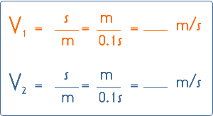

El movimiento variado es el más común dentro del movimiento mecánico de las partículas, este se presenta cuando la aceleración es variable con respecto al tiempo, con lo que la velocidad y posición varían de maneras muy distintas.
Este movimiento es el mas generalizado, del cual el MRU, el MRUV, el MCU, el MCUV, o el movimiento parabólico son casos especiales del mismo.
En un movimiento acelerado aumenta el intervalo entre los puntos de marcación, mientras que en un movimiento retardado disminuye dicho intervalo.
En este experimento el carrito lleva a cabo un movimiento en el cual en intervalos de tiempo iguales no recorre distancias iguales. A este tipo de movimiento lo llamamos "movimiento variado".
Identificar el movimiento variado.
Procedimiento
Preparación:
Montaje de acuerdo a la ilustración
1) Colocar el carrito sobre la pista.
2) Colocar el generador de marcas de tiempo al final de la pista.
3) Colocar en el otro extremo el jinete, el cual deberá evitar que el carrito ruede hacia abajo.
4) Tiramos a través del generador de marcas de tiempo de una cinta metalizada y la fijamos al carrito por medio de una etiqueta adhesiva.
5) Aseguramos el otro extremo de la cinta registradora a la pinza de cocodrilo en el generador de marcas de tiempo.
6) Operar el generador de marcas de tiempo en posición 100 ms, con lo que hará una marca sobre la cinta registradora cada 0.1s.
7) Conectar el generador de marcas de tiempo a una tensión alterna de 15 V.
1) Ponemos la llave en "100ms" y movemos el carro con la mano sobre la pista.
2) Intentamos llevar a cabo el movimiento de tal manera que la velocidad del carro primero aumente y después disminuya de nuevo. Para ello, primero tiramos lentamente y luego (a partir del centro de la pista) rápidamente y al final de nuevo lentamente. Al llegar el carrito al final de la pista paramos el marcador (posición central) y retiramos la cinta registradora del soporte.
Primero tomamos de la parte inicial dos puntos de marcación que se encuentren muy próximos entre sí y determinaremos la distancia entre ellos. Luego escogeremos dos puntos que posean mayor distancia entre sí. El intervalo de tiempo entre dos marcas es 0,1 seg. A partir de la distancia medida y del tiempo calcularemos para ambos casos la velocidad.
